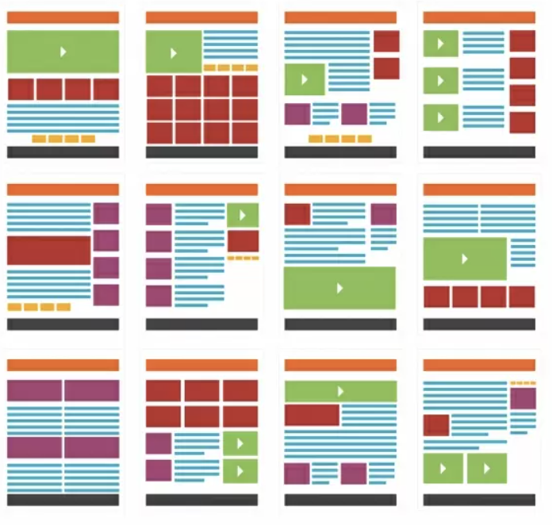

One of the most critical changes within digital text design is the creation of multimodular pages. These sites contain multiple modes to disseminate information on one page such as providing text, image, and video.

Multi-modularity usually creates an increase in visual components that can distract or break up the main text. The separation of the content in multi-modular pages creates individual blocks of text that make it easy for readers to jump around through the content in a non-linear manner.